{{title}}
Decide who will advocate for you
Instead of leaving your health decisions up to B.C. Law, you can set who YOU
want as your Substitute Decision Maker (SDM). Again, this is only if you are incapable of making your own
decisions due to injury or illness. You can name your preferred SDM and even an alternate SDM by filling
out a form called Representative Section-9. (This applies to B.C. only, check your province or state for
a form that provides the same service).
Your Formal Substitute Decision Maker must follow the directives you have laid out in this
Enhanced Representation Agreement should you become incapacitated. If you are only partially ‘incapable’
you can still make some decisions and these will be given priority.
There is no need to involve a Lawyer, Doctor or Notary Public as Representative 9 is legal as long as proper
witnesses and signatures are made.
Personal decisions include where you live (examples are a hospital, home care, hospice etc.), your diet, clothing and
hygiene and activities. It also includes decisions about who can have contact with you.
Health care decisions include tests, examinations, treatments and procedures related to your health such as surgery, medication and vaccines.
It also gives permission for the Representative to make decisions about life support and life prolonging procedures.
It does NOT include decisions related to financial or legal decisions.
If you are still of sound mind, you will always be the first to make your own decisions.
However, if not, the health care provider will adhere to your fully legal Section-9 Representative document.
There are a number of forms created by different agencies including
the Attorney General of B.C., the Dying with Dignity Association and Palliative Care B.C. They may vary wording slightly but
they must all follow the legal guidelines. You can view and download the
Representative Section-9 form here from the B.C. government website.
Before you start, you can go through each section as I have screen-shot below to fully understand your what the form is about. Ask your Representatives first
and make sure they are willing to take on the task. Your witnesses do not need to be present during the signing with the Representatives, but
they do need to see you sign the form.
At the top of the form (shown below) it states that this particular document is one of many replications available on
the Internet. It reiterates that this form doesn't constitute legal advice, may not be suitable for everyone and can and may be
updated at any time.
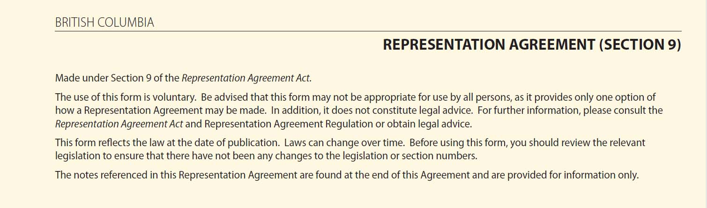
SECTION 1 is where you fill in your full legal name, full address and the current date. Make sure you fill these in
as they are shown on other legal documents such as your drivers license or tax forms.
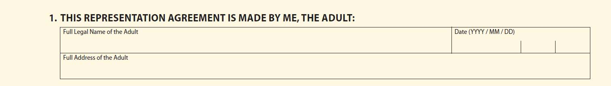
SECTION 2 relates to any previous Representative Section-9 from you may have written.
If this is your first Representative Section-9 agreement, you can disregard this line. If it isn't you
need to follow the instructions at the bottom of the page to revoke your original Representative.
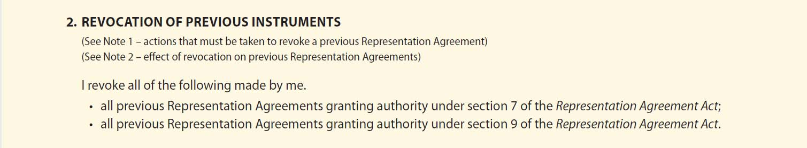
SECTION 3 is where you fill in the full legal name and full legal address of your primary Substitute Decision Maker, also
known simply as 'Representative'.
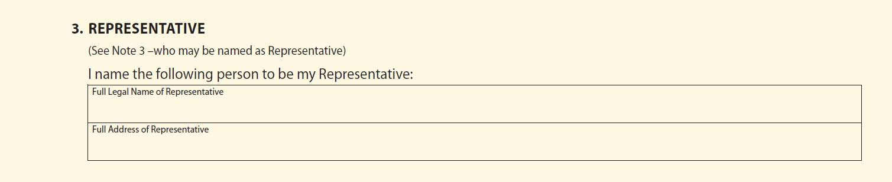
SECTION 4 is where you fill in the full legal name and full address of your Alternate Substitute Decision Maker, also
known simply as your 'Alternate Representative'. You can choose an Alternate Representative to ensure that you are still
protected if your first Representative either dies or resigns him or herself from the position or becomes 'incapable'.
It is also to protect yourself should you divorce or separate from your Primary Representative.
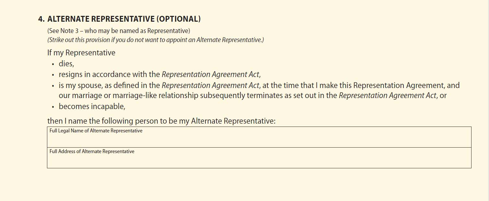
SECTION 5 can be ignored if you have NOT appointed an Alternate Representative. If you have no Alternate Representative,
cross (X) this line out. If you have appointed an Alternate and you wish to substitute them for the Primary Representative
you need to fill out the STATUTORY DECLARATON FOR EVIDENCE OF AUTHORITY OF ALTERNATE REPRESENTATIVE found at the bottom of the document.
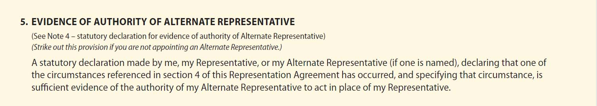
SECTION 6 states that you give permission for your Representative(s) to present and support your health care wishes to the medical community.
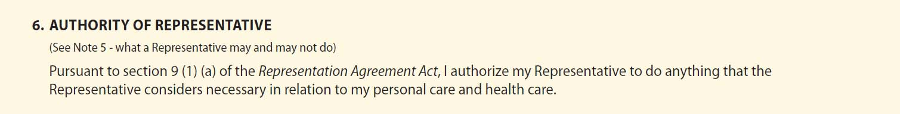
SECTION 7 allows you to write down specific wishes and requests related to your health care. For example if you are suffering
from a disease with no cure, you may want to write down your NO CPR directive. If you also fill out an Advanced Care Plan, you are
prompted to answer your wishes related to many of the common situations.
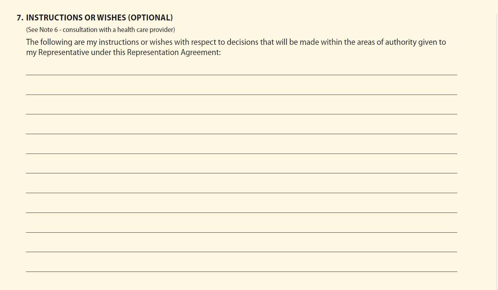
SECTION 8 simply states that the agreement becomes valid as of the date signed by you, your Representative(s) and your Witnesses.
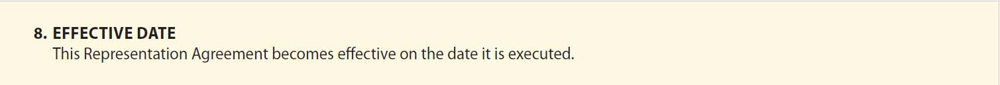
SECTION 9 - ADULT'S SIGNATURE: is where you sign the form, print your name and write the date in front of your Witnesses.
The Witnesses sign below this, printing out their full name and full legal address. If one of your witnesses is a Lawyer or
Notary Public, you only need one witness. If not, you need two Witnesses. They must witness you sign the form here.
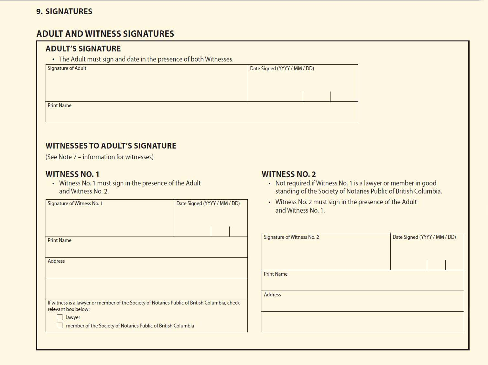
SECTION 9 - REPRESENTATIVES SIGNATURES: is where you and your primary and secondary, if applicable, Representative(s) sign the form.
They do not have to sign this portion in front of Witnesses.
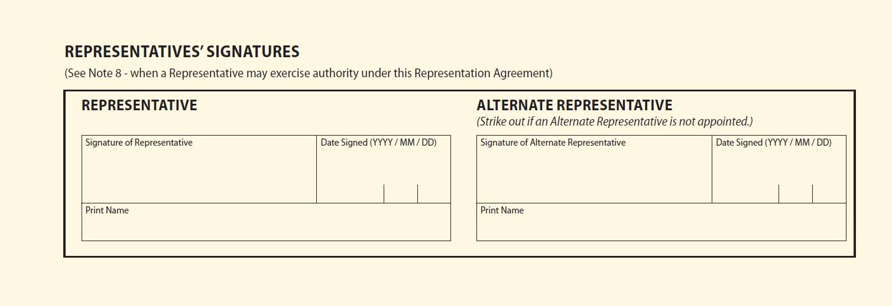
Who Can Represent for You By Law?:
- They must be 19 years of age or older
- They can not provide personal care or health care services to you for compensation
- They can not be an employee at a facility where you reside such as a care home
(unless they are your child, parent or spouse)
Some of the things to consider:
- Would they be accountable to you and the Health Care Personnel?
- Would they be able to exercise the duties set out for them?
- Would they act honestly and honorably on your behalf?
- Do they have good communication skills?
- Would they respect and abide by your wishes?
- Are they careful record keepers?
- Are they confident enough to accept sole authority for your care?
- Are they capable of also seeking advice from others?
- Can they keep all information confidential?
- Can they remain calm in a crisis?
- Are they ready and willing to take on the role?
- Do you trust them to make the proper decisions for you?
- Can they make difficult decisions?
Your Representative has the right to:
- Visit and talk to you as needed with open communication
- The same medical information you would have access to
- Ask all reasonable questions about your health and prognosis
- Be paid for out-of-pocket expenses related to your care (keep receipts)
- Hire help and support to help them carry out your written requests
- Be protected from liability for any errors or damages that occur
- Resign from the role at any time
- Request compassionate leave from work to care for you
Your Representative has a Duty to:
- Consider whether your health is likely to be improved by a treatment or not
- Consider if your well-being will be improved by a proposed treatment
- Consider if the proposed treatment’s benefits outweigh the risks
- Investigate whether a less intrusive treatment may be as helpful
- Resist being pressured into agreeing to any treatment you would not want
- Review your wishes (ex. once a year) or as your health changes
- Allow you say should you still have the capability to make partial decisions
- Follow your wishes no matter how they feel about them
- Ensure that they have access to all your health records, prescriptions etc.
- Has all advanced care documents: Rep-9, Rep-7, Advanced Directives
Your Representative Can Not:
- Make some decisions related to your mental health
- Authorize removal of organs
- Allow for experimental health care practices
- Authorize abortions or sterilization
- Take over care and education of your underage (less than 19) children or other dependents
- Allow for methods that interfere with your religious beliefs
- Make changes to your Will
- Give or refuse consent on your behalf to any type of health care prescribed under section 34 (2) (f) of the
Health Care (Consent) and Care Facility (Admission) Act
Witnesses
Check below to make sure the witnesses you have chosen meet the criteria set out by law. You will need to
obtain two witnesses unless you employ a lawyer or Notary Public in which case only 1 signature is needed. The witnesses
must be on hand to watch you sign before they sign.
The following persons may not be a Witness:
- Your Primary or Alternate Representative
- A spouse, child, parent or employee of either Representative
- A person who provides personal care, health care or financial services to you for compensation (other than a Lawyer or Notary Public)
- A person who is under 19 years of age
- A person who does not understand the type of communication used by you if there is no access to an interpreter
Every province has different forms to help you achieve designating the advocates you want to have represent you.
In
Newfoundland and Labrador the form is called
the Advance Health Care Directive form and within this form there is a section where you can designate your Advocate who instead of being called
your Representative as in B.C., they are called your Substitute Decision Maker. Note the difference between this and the Temporary Substitute
Decision Maker. It could all be so much easier if it was the same across the country!
In
Nova Scotia
your Advocates are called Delegates and the
Advanced Care form is called your Personal Directive. If you don't choose a Delegate,
then the care provider will be authorized under the Personal Directives Act to use the called statutory decision-makers form.
As with the Temporary Substitute Decision Makers form in B.C. this form will allow a health care provider to start at the top of the list
and continue down it until they find someone who agrees to be your Delegate.
In
Prince Edward Island the Health Advocate is called the Proxy and the Advanced Care Form you fill out is called a Health Care Directive.
Unlike B.C., a Proxy need only be over 16, whereas in B.C. the 'Representative' must be over 19.
In
New Brunswick
the Health Advocate is also called the Proxy and the form is also called the Health Care Directive. It also has a section
where you can add those who you wish to have contacted. Only one witness is needed.
In
Quebec
the Advocate is called the Mandatary and the form is called the Advance Medical Directives. They will not allow you to view this
form until you create a 'clicSÉQUR' account, after which a personalized form will be created for you.
In
Ontario your Advocate is called the Substitute Decision Maker
and the Advanced Care form is called the Advance Care Directive/Wishes form.
It carries no legal weight, however, so anything that you have written down on this form in terms of your wishes may be disregarded by both your
Substitute Decision Maker and by the medical team who will make decisions based on the situation at the current moment in time.
In
Manitoba your Advocate is called your Proxy and the form that you
fil out is called the Heath Care Directive. There is no need to have
anyone act as Witnesses with this simple to use form. They do not have any authority involving Medical Assistance in Dying (MAID).
In
Saskatchewan your Advocate is also called a Proxy and the form is called an Advance Directive. If you have not designated a Proxy,
then the health care provider will appoint one based on the Temporary Substitute Decision Maker list.
In
Alberta your Advocate is also called an Agent and the form is called an Personal
Directive. This form provides for a wider range of
duties that can be performed by the Agent as compared to other forms.
In
the North West Territories (NWT) your Advocate is called the Agent and the Advanced Care form is called the Personal Directive. It also
includes areas to specifically request and/or reject certain emergency or life prolonging health care procedures.
In
the Yukon
the Advocate is called the Proxy and the Advance Care form is called the Representative Agreement. This form also leaves
room for you to add special directives related to your future care in terms of emergency or life prolonging procedures.
In
Nunavut
legally there is no
such thing as a stated Advocate and Advance Care Directives are not recognized. Anyone wishing to act as your
Guardian must be willing to apply to the Nunavut Court of Justice for an order appointing them.
This document should be kept with your will, and a copy should be given to the Representative you choose, the alternate if you choose,
to have one. You can also leave a copy with your family doctor. Let your family, specifically your Representatives know where you have
placed all your important documents. I personally have all of my documents, including the financial information in a fire-proof safe.
Paramedics know to look for any kind of directive on or in your fridge or freezer.